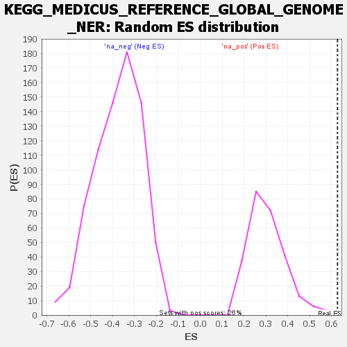

| | | Dataset | all_genes |
| Phenotype | NoPhenotypeAvailable |
| Upregulated in class | na_pos |
| GeneSet | KEGG_MEDICUS_REFERENCE_GLOBAL_GENOME_NER |
| Enrichment Score (ES) | 0.6271269 |
| Normalized Enrichment Score (NES) | 2.0611882 |
| Nominal p-value | 0.0 |
| FDR q-value | 0.032056667 |
| FWER p-Value | 0.041 |
Table: GSEA Results Summary
 Fig 1: Enrichment plot: KEGG_MEDICUS_REFERENCE_GLOBAL_GENOME_NER
Fig 1: Enrichment plot: KEGG_MEDICUS_REFERENCE_GLOBAL_GENOME_NER
Profile of the Running ES Score & Positions of GeneSet Members on the Rank Ordered List

Fig 2: KEGG_MEDICUS_REFERENCE_GLOBAL_GENOME_NER: Random ES distribution
Gene set null distribution of ES for KEGG_MEDICUS_REFERENCE_GLOBAL_GENOME_NER